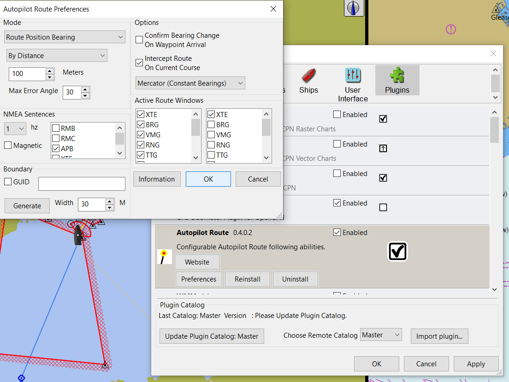

AutoPilot Route
Aim
Provide Configurable Autopilot Route following abilities for OpenCPN.
Please note that Autopilot_Route does output a continuously changing bearing in some modes, which is no problem for pypilot, but some autopilots might not allow it. Also this plugin has only been tested with pypilot at this point in time. If you are using it with other autopilots please advise regarding your experience.
The autopilot route plugin (beta) is a completely separate plugin to be used with any autopilot. It allows you to use different algorithms and closely tune them for route following logic. It has nothing specific to pypilot. This plugin allows the user to select different algorithms and closely tune them for route following logic. The autopilot route plugin replaces the nmea APB output built into opencpn with many more options for computing how this sentence is generated.
-
The autopilot route plugin outputs a continuously changing bearing in some modes always with xte of 0 (because xte is not used) so the autopilot must accept this and not require confirmation for it to work.
-
To make Pypilot follow routes from either Opencpn without the autopilot route plugin or with it is the same. You need to make tcp connection from Opencpn to Pypilot port 20220 with “output on this port” checked.
-
The latest version of the Pypilot Plugin can automatically send nmea sentences to port 20220 on whatever host it connects to Pypilot for Signalk which makes it easier to change the autopilot host (if you have more than one, for example) without needing to add or change the connection in opencpn.
Links
-
Source: Github Source by Sean Depagnier
-
Maintenance Source: https://github.com/rgleason/autopilot_route_pi
-
Installation Instructions: Plugin Download, Install and Enable
-
Legacy Downloads: Autopilot_route_pi
-
Legacy Downloads for Windows: Autopilot_route_pi for Windows
-
Video: The autopilot route plugin capable of steering under sail in harbors Pypilot on Princess Mia
Purpose
The autopilot route plugin is capable of steering under sail in harbors. This plugin is used in Sean’s video of a heavy steel sailboat with a windshield wiper motor driving the wheel and Autopilot_Route_pi directing the motor: https://youtu.be/KQuBwLSMSxI
Installation
Pypilot Autopilot is available as a managed plugin (PIM), which is the easiest way to install the plugin. The OpenCPN Manual has general Installation Instructions: Plugin Download, Install and Enable for installing this plugin. This is the preferred way.
In OpenCPN, go to the Options → Plugins and download, install and enable the Autopilot_Route plugin.
Modes
-
Route Position Bearing
-
Standard Cross Track XTE -XTE multiplier
-
Waypoint Bearing -by Distance or by Time
Options
-
Confirm Bearing change on Waypoint Arrival.
-
Intercept Route on Current Course
It has several other very nice features.
Interface Note
Keep in mind that this plugin does not have a normal toolbox icon or menu, it’s settings are controlled from the preferences menu.

Douwe advises:
-
There is a proprietary PGN that allows setting the heading of the Raymarine EV-1 pilot when it is in auto mode. This is PGN 126208 with a data length of 14. In canboat format this pgn looks as follows:
Z,3,126208,7,204,14,01,50,ff,00,f8,03,01,3b,07,03, 04,06,f0,3d-
The last 2 data bytes indicate the heading to be set in thousands of radials, least significant first (divide by 174.53 to get degrees). So the above will set a heading of 91 degrees.
-
This is tested with canboat and a Actisense NGT-1 and functions flawless.
Sean Advises:
The autopilot route plugin could easily be extended to emit this message. I cannot really implement it because I have no way of testing it.
AP Windows Connection via USB
NMEA is a serial connection using the RS422 physical layer. While the 'S' in 'USB' does stand for serial it is an entirely different serial system. You will need a USB-serial converter for your laptop (unless your laptop has an actual serial port, most newer ones do not). Done properly you would get a USB-RS422 converter, but most systems will also work with the more common USB-RS232 connector.
You will also need the driver for your operating system and the converter you select, not all are created equal so make sure your flavor of operating system is supported. After that the converter will appear as a 'COM' port in Windows and you configure O to output to that COM port.
There are lots of other options, including adding a WiFi dongle to your Raymarine that means you don’t have to use wires, but those get more complicated.
FAQ
How to ‘pair’ Autopilot_Route _pi with Pypilot?
Pypilot works well itself. Autopilot_Route works itself and shows the right overlay but does not direct pypilot in any gps or compass mode.
How to direct nmea output from autopilot to signalk?
How does one use autopilot with pypilot or pypilot motor controller?
The Autopilot_Route Plugin is not specific to Pypilot or any other autopilot. It replaces the nmea APB output built into opencpn with many more options for computing how this sentence is generated. It does output a continuously changing bearing in some modes which is no problem for Pypilot, but some autopilots might not allow it.
-
I didn’t try other autopilots with the route plugin, but apparently some autopilots require confirmation on bearing change. So the apb must give the same bearing always and only after xte.
RPI Pypilot Links
-
Source: PyPilot Github (Raspberry Pi Autopilot) also same author
-
Manual: RPI Pypilot Opencpn Go down to the bottom "Pypilot Autopilot"